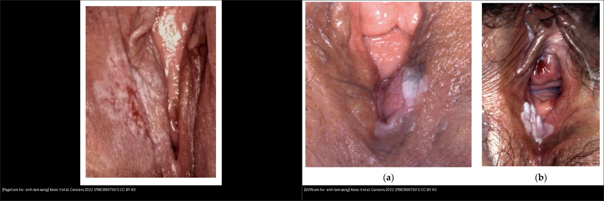
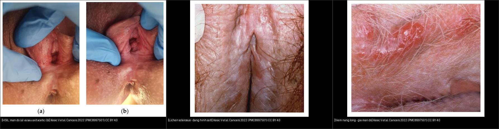
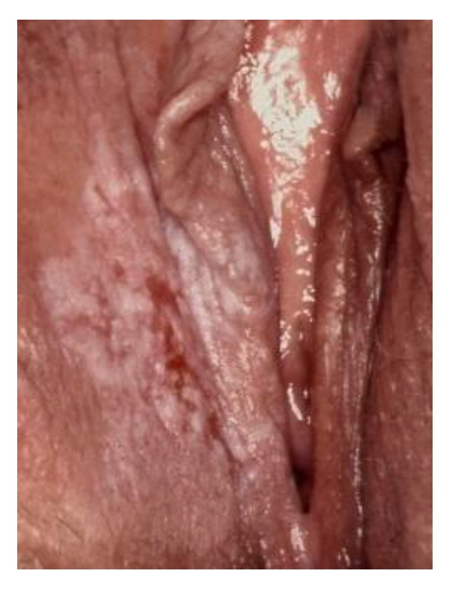
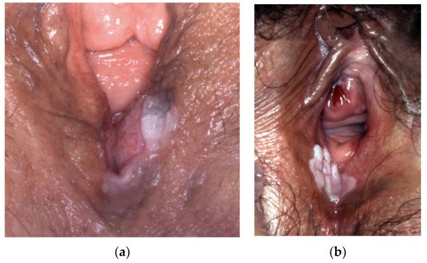
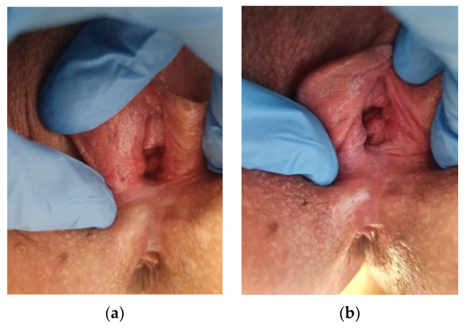
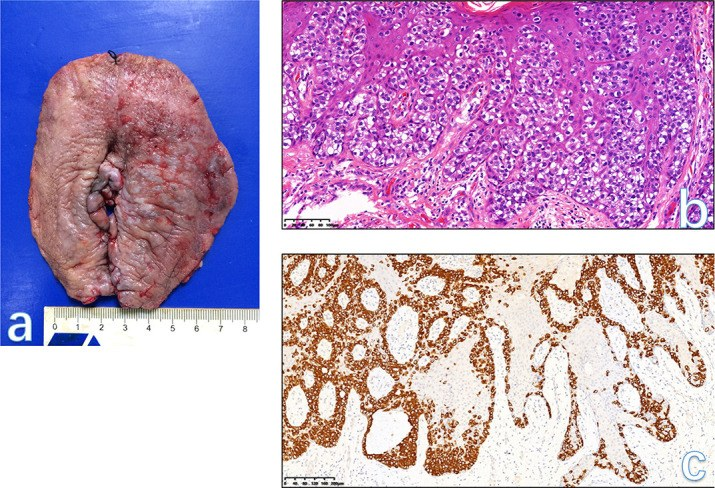
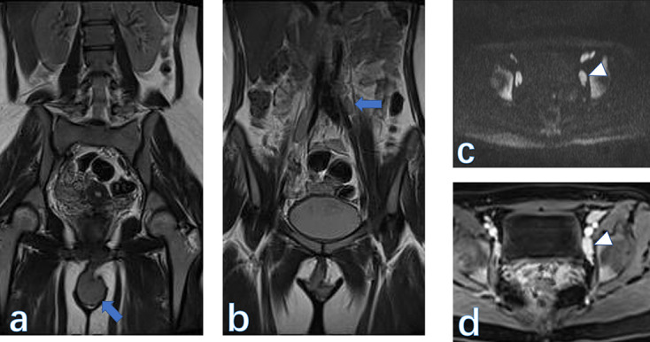
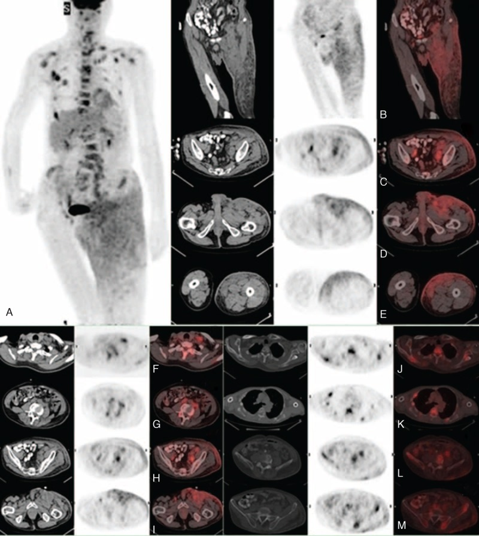

576 — Bệnh Paget âm hộ & ung thư nội biểu mô âm hộ (VIN): mảng đỏ–trợt & nguy cơ SCC xâm lấn
Tags: pattern:man-do-am-ho pattern:man-trot pattern:u-am-ho pattern:hach-ben vung:am-ho score:WHO-2020-VIN protocol:vulvoscopy-sinh-thiet-mapping protocol:MRI-chau protocol:PET-CT
Mức chắc chắn (certainty): tổng hợp y văn (literature synthesis) — gom review tổng quan (Cancers 2022), nghiên cứu đoàn hệ (Cancers 2021; Acta Obstet Gynecol Scand 2024; J Low Genit Tract Dis 2024), review MRI âm hộ (BJR Open 2023; Front Med 2026) và ca nguyên văn (Medicine 2015; Int J Surg Case Rep 2023; Dermatol Pract Concept 2023).
Bài toán CĐHA của nhóm này ngược với u âm hộ đặc (bài 574): tổn thương có thể chỉ là mảng đỏ, trợt, ngứa dai dẳng — trông giống chàm/nhiễm nấm, nên chẩn đoán thường bị trễ và sinh thiết bị trì hoãn. Vai trò của hình ảnh là (1) chọn chỗ sinh thiết (soi âm hộ + axit acetic), (2) loại trừ SCC xâm lấn ẩn dưới (MRI/DWI khi cần), (3) tìm hạch bẹn và (4) với Paget, tìm ổ ung thư ác nội tạng đồng thời (kiểu 2).
1. Tổng quan bệnh học – cơ chế hình ảnh
- Hai con đường sinh ung âm hộ (WHO 2020 — LAST/ISSVD): (1) liên quan HPV (HPV-associated) — thể "thông thường" nay gọi HSIL âm hộ (u nội biểu mô âm hộ bậc cao, high-grade squamous intraepithelial lesion), ưu thế phụ nữ trẻ, đa ổ/đa trung tâm, thường HPV 16; (2) không liên quan HPV / thể biệt hóa (differentiated VIN, dVIN) — p53 đột biến, nền lichen sclerosus, phụ nữ lớn tuổi, đơn ổ, xâm lấn nhanh (Kesić 2022; Voss 2021; Voss 2024).
- Bệnh Paget ngoài vú (extramammary Paget disease, EMPD) — bệnh Paget âm hộ (Paget disease of the vulva, PDV): adenocarcinoma nội biểu mô nguyên phát ở da vùng chứa tuyến apocrine, chiếm 1–2% u tân sinh âm hộ (Pérez 2023). Chia kiểu 1 (nguyên phát tại âm hộ/da) và kiểu 2 (thứ phát — đi kèm adenocarcinoma nội tạng không-da: trực tràng–hậu môn, niệu quản–bàng quang, cổ tử cung) nên bắt buộc tầm soát ổ nguyên phát (Bencherifi 2023). Paget dương tính CK7, CEA, mucin — phân biệt với melanoma (S100/HMB-45/Melan-A) và SCC (Pérez 2023).
- TẠI SAO thấy trên từng phương thức (vật lý + mô bệnh):
- Soi âm hộ (vulvoscopy) + axit acetic: HSIL chuyển trắng (acetowhitening) do nhân đặc/tăng tỷ lệ nhân–bào tương; dVIN thường KHÔNG ngả trắng (biểu mô sừng hóa, không tăng nhân tương xứng) → đây là lý do dVIN bị bỏ sót khi chỉ soi mà không sinh thiết (Kesić 2022).
- Dermoscopy (soi da): HSIL/VIN1 — nền hồng–đỏ đồng nhất + mạch cầu thận đều (regular glomerular vessels); VIN3 — vùng trắng sữa đặc (compact milky-white areas); VIN2 — vùng trắng không đặc xen kẽ đỏ (De Giorgi 2023).
- MRI: tổn thương nội biểu mô thuần (VIN, Paget không xâm lấn) chỉ làm dày lớp biểu mô → MRI có thể bình thường hoặc dày nhẹ/ngấm nhẹ, KHÔNG đặc hiệu. Khi có SCC xâm lấn, khối T2W tín hiệu trung gian, khuếch tán hạn chế (ADC thấp) và ngấm thuốc, kèm hạch bẹn hoại tử (Ning 2023).
- T2W của Paget: trong ca PDV thấy dày tiêu điểm lớp mô âm hộ trên T2W xóa mỡ (fat-sat) + ngấm thuốc nhẹ (Ning 2023) — tương ứng mô bệnh tế bào Paget rải trong biểu mô.
- PET/CT ¹⁸F-FDG: tổn thương Paget xâm lấn/lan rộng có ngấm FDG nhẹ ở da–dưới da, giúp bản đồ hóa vùng lan và hạch vùng (Li & Qin 2015).
- Ngưỡng định lượng nổi bật (để nhớ):
- dVIN → SCC âm hộ: nguy cơ tuyệt đối phát triển VSCC 33–86%, trung vị 9–23 tháng; nguy cơ tái phát VSCC ở bệnh nhân dVIN-VSCC 32–94%, trung vị 13–32 tháng (tổng quan hệ thống, Voss 2021).
- dVIN đơn độc (solitary): nguy cơ VSCC 43,2% trong đoàn hệ 44 bệnh nhân (Gallio 2024).
- VIN không liên quan HPV: tỷ lệ mới mắc tăng từ 0,09 lên 0,69/100.000 nữ–năm (1991–2010 → 2011–2019); tái phát tích lũy 29% sau 8 năm, ung thư 46% sau 13 năm; yếu tố nguy cơ tiến triển: tuổi cao + p53 đột biến (Voss 2024).
- PDV: tuổi trung vị 69,3 (khoảng 38–84); bệnh xâm lấn 4/24 (~17%), di căn hạch bẹn 1/24, bờ phẫu thuật dương 11/24, tái phát 33,3% (Loiacono 2019).
- PDV & HER2: 30–40% bệnh nhân quá biểu hiện HER2 → có ý nghĩa điều trị (trastuzumab) ở bệnh lan rộng (Pérez 2023).
2. Mẫu hình + chẩn đoán phân biệt theo vị trí (gamut)
- Mảng đỏ/trợt/ngứa dai dẳng ở âm hộ — gamut:
- Tiền ung thư–ung thư: HSIL (VIN thông thường), dVIN, bệnh Paget âm hộ, SCC xâm lấn (có thể ẩn dưới VIN/Paget), melanoma âm hộ (sắc tố).
- Bệnh da lành hay nhầm: lichen sclerosus (mảng trắng teo, dạng "số 8"), lichen planus, chàm/vảy nến, viêm nang lông (folliculitis), nhiễm HPV/sùi (condyloma), viêm da tiếp xúc, nấm.
- Paget "giả" các bệnh da là cạm bẫy kinh điển: hình dạng giống chàm nhưng không đáp ứng corticosteroid → sinh thiết.
- Theo vị trí: môi lớn/môi bé (hay nhất), tiền đình, quanh hậu môn, lan tới bẹn–đùi–quanh hậu môn (Paget hay lan rộng, "skip lesions"); hạch bẹn là nơi di căn đầu tiên.
- Hạch bẹn to — gamut: di căn (SCC/melanoma/Paget xâm lấn), viêm/mô phản ứng (nhiễm trùng bàn chân), lymphoma, hạch sau tiêm.
3. Bảng so sánh phân biệt (ma trận đối chiếu)
| Thực thể (entity) | Hình ảnh điển hình | Chốt vào (rule-in) | Chốt loại (rule-out) | Gợi ý xác nhận |
|---|---|---|---|---|
| HSIL âm hộ (VIN thông thường) | Mảng đỏ, có thể sần/hơi sùi, đa ổ; ngả trắng với axit acetic; dermoscopy: mạch cầu thận đều | Mảng đỏ + acetowhite (+) ở phụ nữ trẻ/đa ổ + HPV (+) | Tổn thương trắng teo đối xứng quanh âm hộ–hậu môn, không ngả trắng → nghĩ lichen sclerosus | Sinh thiết chỗ acetowhite; p16 dương khối (block-positive); HPV test |
| dVIN | Mảng trắng–xám/xám–hồng, ranh giới mờ, nền lichen sclerosus; thường đơn ổ; KHÔNG ngả trắng rõ với axit acetic | Mảng xám–trắng "nhạt nhòa" + nền lichen sclerosus ở phụ nữ lớn tuổi | Ngả trắng rõ/đa ổ, p16 dương → nghĩ HSIL | Sinh thiết đa điểm; p53 đột biến (mutation pattern), p16 âm; CK17/SOX2 (+) |
| Bệnh Paget âm hộ (PDV) | Mảng đỏ–hồng, bề mặt ẩm/trợt, có vảy hoặc trắng bạc, ranh giới rõ–uốn lượn, có thể lan rộng; ngứa | Mảng đỏ dai dẳng không đáp ứng corticosteroid + CK7 (+) | Tổn thương sắc tố (melanoma), có mụn nước (herpes), có nấm soi thấy → loại trừ trước | Sinh thiết: tế bào Paget (CK7+, CEA+, mucin+); tìm ổ nguyên phát nội tạng (kiểu 2) |
| SCC xâm lấn (ẩn dưới VIN/Paget) | Nốt/loét cứng, đáy hoại tử; MRI: khối T2 trung gian, DWI hạn chế, ngấm thuốc, ± hạch hoại tử | Nốt/loét cứng + MRI T2 trung gian + DWI hạn chế + ngấm | Tổn thương nông, mềm, T2 tăng, không hạn chế khuếch tán → nghĩ lành | MRI chậu (T2FS + DWI + DCE) + sinh thiết sâu; đánh giá hạch bẹn |
| Lichen sclerosus | Mảng trắng ngà teo, dạng số 8 quanh âm hộ–hậu môn; có thể nứt, dính | Mảng trắng teo đối xứng + ngứa mạn | Mảng đỏ sùi/ngả trắng → nghĩ VIN/SCC | Sinh thiết (loại trừ dVIN/SCC trên nền LS); theo dõi lâu dài |
| Viêm nang lông / chàm / lichen planus | Sẩn đỏ quanh nang lông, chàm rỉ dịch, lichen planus dạng mạng trắng (Wickham) | Đáp ứng corticosteroid ± kháng sinh, triệu chứng theo mùa/dị ứng | Không đáp ứng steroid, lan rộng/tiến triển → phải sinh thiết | Sinh thiết nếu dai dẳng > 4–6 tuần dù điều trị |
| Hạch bẹn di căn | Hạch to, mất mỡ rốn, bờ không đều, hoại tử, DWI hạn chế, PET dương | Hạch bẹn hoại tử/ngấm mạnh + ổ nguyên phát âm hộ | Hạch < 5–10 mm, giữ mỡ rốn, ngấm nhẹ → chưa kết luận | FNA/chọc hút; MRI + PET/CT; SLNB nếu hạch âm trên hình ảnh |

Trái: bệnh Paget âm hộ — mảng đỏ–trắng bạc, bề mặt ẩm/trợt ở môi lớn. Phải: dVIN — mảng trắng–xám nhạt nhòa, ranh giới mờ. Cả hai ảnh: Kesić V et al., Cancers (Basel) 2022 (PMC8997501), CC BY 4.0. Ảnh ghép letterbox giữ tỷ lệ, không crop/kéo giãn.
Trái: HSIL (a) mảng đỏ, (b) sau axit acetic ngả trắng. Giữa: lichen sclerosus dạng số 8. Phải: viêm nang lông giả mảng đỏ. Cùng nguồn Kesić V et al., Cancers (Basel) 2022 (PMC8997501), CC BY 4.0.4. Protocol chụp + hệ phân độ/điểm chuẩn hóa
- Đầu tay (không phải CT/MRI): soi âm hộ (vulvoscopy) + sinh thiết có bản đồ hóa. Kem/lotion corticosteroid và kháng nấm làm mờ tổn thương → ngừng vài tuần trước soi. Dùng axit acetic 3–5% tìm vùng ngả trắng (HSIL) nhưng luôn sinh thiết cả vùng xám–trắng nhạt nhòa (dVIN) và mảng trợt dai dẳng (Paget) vì dVIN/Paget không ngả trắng (Kesić 2022; De Giorgi 2023).
- Dermoscopy: phân biệt HSIL (mạch cầu thận đều, vùng trắng sữa đặc ở bậc cao) với bệnh da lành; không thay thế sinh thiết (De Giorgi 2023).
- MRI chậu (khi nghi xâm lấn hoặc để đánh giá lan/hạch): T2W fat-sat + DWI (b = 50–800) + DCE T1 sau tiêm, FOV nhỏ vùng âm hộ + FOV lớn tìm hạch; MRI KHÔNG loại trừ VIN nội biểu mô (Ning 2023). Với Paget xâm lấn: MRI giúp xác định độ sâu/lan và hạch trước mổ.
- PET/CT ¹⁸F-FDG: vai trò cho Paget lan rộng/xâm lấn và tìm ổ nguyên phát/di căn (Li & Qin 2015); cũng dùng trong ung thư âm hộ giai đoạn cao (bài 574).
- Phân loại WHO 2020 (âm hộ): bỏ "VIN 1–3" cũ; dùng HSIL âm hộ (tương ứng VIN thông thường độ cao) và dVIN; u nội biểu mô âm hộ bậc thấp (LSIL) = condyloma/HPV.
- Ngưỡng xử trí:
- dVIN: nguy cơ SCC rất cao → cắt bỏ (excision) với bờ âm + theo dõi sát; bờ dương là yếu tố nguy cơ tái phát độc lập (Voss 2024).
- HSIL: cắt bỏ/laser hoặc imiquimod 5% (bệnh đa ổ), theo dõi; tái phát thường gặp.
- Paget: cắt rộng/Mohs; tái phát ~33% do lan dưới lâm sàng (skip lesions) → kiểm bờ kỹ, theo dõi lâu dài; tầm soát đồng thời adenocarcinoma trực tràng–niệu quản–cổ tử cung (Pérez 2023; Loiacono 2019).
flowchart TD
A[Mang do - trot - ngua dai dang vung am ho] --> B{Da dieu tri corticosteroid 4-6 tuan?}
B -->|Do khong dap ung| C[Soi am ho + axit acetic 3-5 phan tram]
C --> D{Vung nga trang acetowhite?}
D -->|Co - da o - nguoi tre| E[Sinh thiet: nghi HSIL - p16 - HPV]
D -->|Khong - mang xam trang nhat nhoa - lon tuoi| F[Sinh thiet da diem: nghi dVIN - p53 dot bien - p16 am]
C --> G[Mang do am uot luon luon?]
G -->|Co - CK7 duong| H[Sinh thiet: benh Paget - tam soat o nguyen phat noi tang kieu 2]
E --> I{Co SCC xam lan an?}
F --> I
H --> I
I -->|Co khoi/loet cung - DWI han che| J[MRI chau T2FS + DWI + DCE - danh gia do sau va hach ben]
I -->|Khong xam lan ro| K[Cat bo/laser/imiquimod + theo doi sat]
J --> L{Hach ben nghi?}
L -->|Co| M[FNA/PET-CT + nau hach ben-dui theo FIGO]
L -->|Khong| N[Theo doi dinh ky - tai phat duoc bao cao 29-33 phan tram]
5. Biến thể bình thường và cạm bẫy
- dVIN không ngả trắng với axit acetic → soi âm hộ "sạch" vẫn có thể bỏ sót dVIN. Quy tắc: mọi mảng xám–trắng dai dẳng trên nền lichen sclerosus phải sinh thiết, kể cả khi không ngả trắng (Kesić 2022).
- Paget "giả chàm": khởi đầu chỉ ngứa, hình dạng eczematous → chẩn đoán muộn hàng năm. Không đáp ứng corticosteroid ≥ 4–6 tuần = sinh thiết (Bencherifi 2023).
- "Skip lesions" của Paget: tổn thương lan gián đoạn ngoài vùng thấy được → bờ phẫu thuật dương cao (11/24 ca trong chuỗi 24 ca) và tái phát ~33%; đừng kết luận "hết bệnh" chỉ dựa mắt thường (Loiacono 2019).
- SCC xâm lấn ẩn dưới VIN/Paget: mọi VIN/Paget phải loại trừ SCC xâm lấn trước khi điều trị bảo tồn — sinh thiết đủ sâu + MRI khi nghi (Kesić 2022; Ning 2023).
- MRI bình thường KHÔNG loại trừ tổn thương nội biểu mô: VIN và Paget không xâm lấn thường không thấy trên MRI — đừng vì "MRI âm" mà bỏ sinh thiết.
- Cạm bẫy mặt cắt (cross-sectional pitfall): khối/mảng âm hộ dễ bị cắt mất nếu FOV chậu không phủ tới môi lớn → đặt FOV tới môi lớn; phân biệt mô cương âm vật bình thường (ngấm thuốc, T2 trung gian) với u/tái phát bằng đối chiếu phim cũ (xem bài 574).
- Nhầm với melanoma: tổn thương sắc tố + tín hiệu T1 cao tự nhiên → S100/HMB-45/Melan-A, không phải CK7 (Pérez 2023).
6. Tự lượng giá — Blind Quiz
Ca 1 — Mảng trợt đỏ dai dẳng ở môi lớn, ngứa nhiều

- Gợi ý lâm sàng: nữ lớn tuổi, ngứa âm hộ kéo dài, đã dùng corticosteroid không đỡ.
- Câu hỏi: Mô tả tổn thương. Ba chẩn đoán phân biệt? Xét nghiệm nào để chốt, và chất chỉ điểm hóa mô miễn dịch đặc trưng?
Bấm để hiện đáp án (findings + chẩn đoán)
- Dấu hiệu: mảng đỏ–hồng xen vùng trắng bạc, bề mặt ẩm/trợt, ranh giới uốn lượn ở môi lớn.
- Chẩn đoán: bệnh Paget âm hộ (PDV) — sinh thiết xác nhận tế bào Paget CK7(+), CEA(+), mucin(+). Vì giống chàm và không đáp ứng steroid, cần sinh thiết sớm; loại trừ ổ adenocarcinoma nội tạng (kiểu 2).
- Nguồn ảnh: Kesić V et al., Cancers (Basel) 2022, Fig. 6 (PMC8997501), CC BY 4.0.
Ca 2 — Nữ lớn tuổi, mảng xám–trắng nhạt nhòa, soi axit acetic "không ngả trắng"

- Gợi ý lâm sàng: nữ lớn tuổi, tiền sử lichen sclerosus, mảng xám–trắng không rõ bờ.
- Câu hỏi: Vì sao không ngả trắng với axit acetic lại nguy hiểm hơn? Chẩn đoán và nguy cơ tiến triển tới SCC là bao nhiêu?
Bấm để hiện đáp án (findings + chẩn đoán)
- Dấu hiệu: mảng trắng–xám nhạt nhòa, ranh giới mờ, trên nền lichen sclerosus; không ngả trắng rõ khi soi.
- Chẩn đoán: dVIN (VIN thể biệt hóa) — p53 đột biến, p16 âm. Nguy cơ tiến triển SCC âm hộ 33–86%, trung vị 9–23 tháng; dVIN đơn độc 43,2% → cắt bỏ với bờ âm + theo dõi sát.
- Nguồn ảnh: Kesić V et al., Cancers (Basel) 2022, Fig. 23 (PMC8997501), CC BY 4.0.
Ca 3 — Mảng đỏ ở người trẻ, đa ổ; soi có vùng ngả trắng

- Lâm sàng: nữ trẻ, nhiều mảng đỏ ở âm hộ.
- Câu hỏi: (a) trước và (b) sau axit acetic khác nhau thế nào? Chẩn đoán? Hóa mô miễn dịch chốt?
Bấm để hiện đáp án (findings + chẩn đoán)
- Dấu hiệu: (a) mảng đỏ; (b) vùng ngả trắng (acetowhite) sau axit acetic.
- Chẩn đoán: HSIL âm hộ (VIN thông thường, liên quan HPV) — p16 dương khối, thường HPV 16; điều trị cắt bỏ/laser/imiquimod và theo dõi.
- Nguồn ảnh: Kesić V et al., Cancers (Basel) 2022, Fig. 3 (PMC8997501), CC BY 4.0.
Ca 4 — "Chàm" không đỡ, sinh thiết cho thấy tế bào Paget + dày lớp mô âm hộ trên MRI

- Lâm sàng: bệnh nhân Paget âm hộ, tổn thương lan từ môi lớn sang môi bé, bờ mờ.
- Câu hỏi: (A) lâm sàng, (B) mô bệnh và (C) hóa mô miễn dịch cho thấy gì? Khi nào cần thêm MRI/PET?
Bấm để hiện đáp án (findings + chẩn đoán)
- Dấu hiệu: (A) tổn thương lan rộng, bờ mờ ở môi lớn–môi bé; (B) tế bào Paget (nhân lớn, bào tương sáng) trong biểu mô; (C) CK7 dương mạnh trong biểu mô.
- Chẩn đoán: bệnh Paget âm hộ. Trong bài gốc, nhánh MRI còn cho thấy dày tiêu điểm lớp mô âm hộ trên T2 fat-sat + ngấm nhẹ. Cần MRI/PET/CT khi nghi xâm lấn hoặc để tìm ổ nội tạng đồng thời, nhưng MRI không loại trừ tổn thương nội biểu mô.
- Nguồn ảnh: Ning Y et al., BJR Open 2023, Fig. 8 (PMC10302693), CC BY 4.0.
Ca 5 — Sinh thiết "VIN" nhưng có khối cứng; MRI phát hiện gì?

- Lâm sàng: khối âm hộ nghi xâm lấn, cần phân giai đoạn.
- Câu hỏi: MRI coronal T2W thấy gì? Hạch chậu trái hiển thị thế nào trên DWI và sau tiêm? Ý nghĩa phân giai đoạn?
Bấm để hiện đáp án (findings + chẩn đoán)
- Dấu hiệu: (A) khối âm hộ trên coronal T2W; (B) hạch to cạnh động mạch chậu trái; (C) DWI hạn chế; (D) ngấm thuốc mạnh. Mô bệnh sau cùng: SCC âm hộ, FIGO IIIC.
- Chẩn đoán/ý nghĩa: SCC âm hộ xâm lấn + hạch chậu → hạch chậu là di căn (không còn là hạch vùng) → phân giai đoạn và chỉ định điều trị thay đổi.
- Nguồn ảnh: Ning Y et al., BJR Open 2023, Fig. 7 (PMC10302693), CC BY 4.0.
Ca 6 — Paget lan rộng toàn thân: PET/CT giúp gì?

- Lâm sàng: bệnh nhân Paget xâm lấn lan rộng vùng bẹn–đùi–hông.
- Câu hỏi: (A) MIP toàn thân và các mặt cắt (B–M) cho thấy những vùng ngấm FDG nào? PET/CT thay đổi xử trí ra sao?
Bấm để hiện đáp án (findings + chẩn đoán)
- Dấu hiệu: (A) hình MIP toàn thân nhiều ổ ngấm FDG; (B–E) xâm lấn dưới da; (F–I) hạch vùng; (J–M) di căn cơ/các ổ xa.
- Chẩn đoán/ý nghĩa: bệnh Paget ngoài vú xâm lấn lan rộng — PET/CT bản đồ hóa vùng lan và di căn ngoài tầm phẫu thuật đơn thuần, định hướng điều trị toàn thân (gồm anti-HER2 nếu HER2+). PET bổ sung nhưng không thay thế sinh thiết/mô bệnh.
- Nguồn ảnh: Li ZG & Qin XJ, Medicine (Baltimore) 2015, Fig. 2 (PMC4602651), CC BY-ND — giữ nguyên bản, không crop/ghép.
Bài liên quan chéo
- 500 – Tổng quan Vú & Sản Phụ khoa
- 574 – Ung thư âm hộ & âm đạo: FIGO 2021 + hạch bẹn–đùi & SLN
- 548 – Khối/nang lành vùng âm hộ–âm đạo (Bartholin, Gartner, Nuck)
- 528 – Dị dạng tử cung bẩm sinh ESHRE/ESGE
- 571 – Sẩy thai tái diễn: tiếp cận hình ảnh tử cung
Ảnh
- Nguồn + giấy phép từng ảnh:
images/CREDITS.md. Ảnh CC BY 4.0/CC BY-NC dùng được (ghi nguồn); ảnh CC BY-ND (PMC4602651) giữ nguyên bản, không crop/ghép; ảnh ghép letterbox từ ảnh CC BY, không crop/kéo giãn.
Không dùng để chẩn đoán độc lập khi chưa có người hướng dẫn.